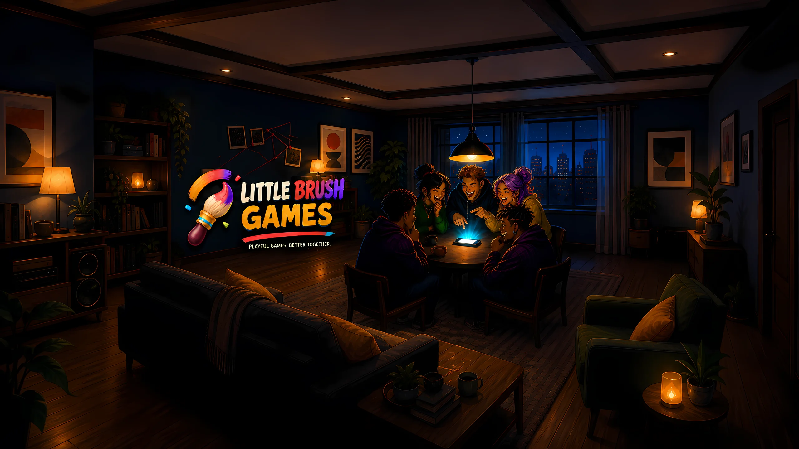

Ответьте на вопрос
В свой ход каждый игрок получает открытый вопрос или задание.

Независимая игровая студия · Гамбург
Игры, которые превращают время у экрана во время вместе.
Truth or Mole · Уже на Android
Передавайте один телефон по кругу. В каждом раунде выбирается тема, а каждый игрок получает свой открытый вопрос или задание. Честные игроки отвечают правдиво; Крот блефует — и пытается пережить голосование.

Дело в трёх шагах
Не нужно долго объяснять правила или брать второй экран. Телефон сам подскажет каждому игроку, что делать.
В свой ход каждый игрок получает открытый вопрос или задание.
Обычные игроки говорят правду. Скрытый Крот отвечает убедительной ложью.
Следите за реакциями, обвините подозреваемого и узнайте, удалось ли компании поймать Крота.
Настоящие экраны игры
Все экраны ниже взяты из текущей Android-версии — никакого концепт-интерфейса и выдуманного геймплея.


Каждый вечер — новое дело
Смешивайте наборы под свою компанию: друзья, семья, пары, коллеги, дети или те, кто всегда выбирает самый хаотичный вариант.
Быстрые ответы. Меньше времени на идеальную историю.
Дополнительные тайные цели помогают заметить подозрительное поведение и делают обвинения громче.
Для больших компаний, которым хочется сделать расследование ещё запутаннее.
Создано Little Brush Games
Мы создаём игры, которые объединяют людей, и особенно любим социальные и компанейские форматы. Truth or Mole — наша первая выпущенная игра, но не граница того, что будет дальше.
До первого обвинения
Да. Версия для Android уже вышла в Google Play. Версии для iOS пока нет.
Нет. Вся компания использует один телефон и передаёт его от игрока к игроку.
Truth or Mole поддерживает от 3 до 16 игроков на одном устройстве.
Аккаунт Little Brush Games не нужен. Google Play может потребовать интернет для установки, покупок и некоторых платформенных сервисов.
В текущей версии доступны английский, немецкий и русский языки.
Напишите на support@littlebrushgames.com.
Стол готов
Скачайте Truth or Mole для Android и начните первое дело уже сегодня.